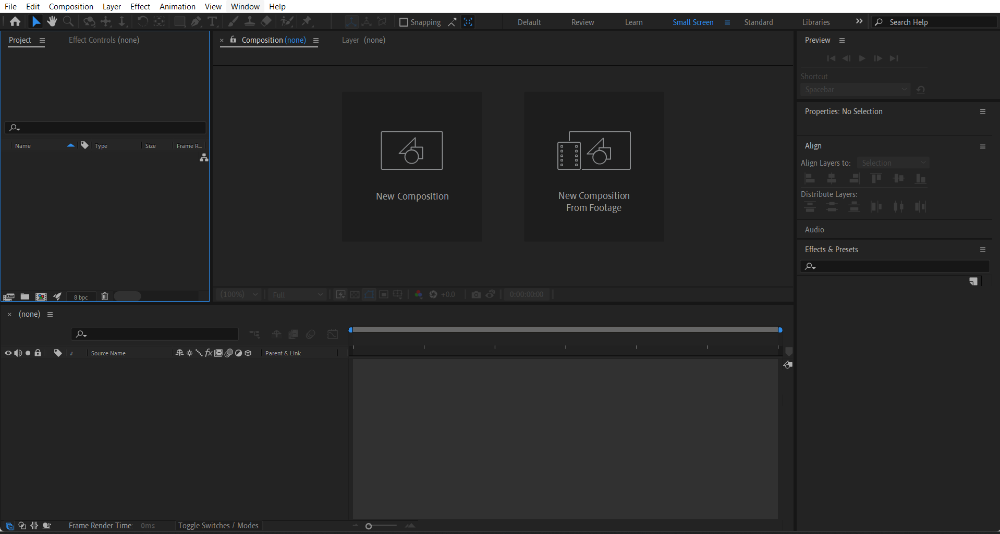

Adobe After Effects is a digital visual effects, motion graphics, and compositing application. When you first launch After Effects, you'll be greeted with its user interface. Although it may seem complex at first, it is designed to provide a powerful and customizable workspace for video compositing and animation.
Double-click on the Project Panel to open File Explorer.
Import all the necessary files.
Alternatively, you can right-click to import files.
(After Creating a new Composition)
e.g: here, 36.6% Fits the whole view area
Here Half means the resolution of video editor is set to half
More Controls will be learned in further parts
(After Creating a new Composition)
Timeline: The composition, through the timeline panel, provides display and control on the arrangement of layers, animation of layers as well as their timing; it also offers access to edit keyframes and properties of the layers.
Playback Controls: The Preview Panel controls the playback of your composition, allowing you to play, pause, and adjust preview settings like resolution and frame rate.
Press [Spacebar] to play the video
Effects Library: The Effects & Presets panel contains a collection of effects and animation presets that can be applied to layers, providing tools for enhancing and modifying your composition.
We will learn more about it in firther Chapters.